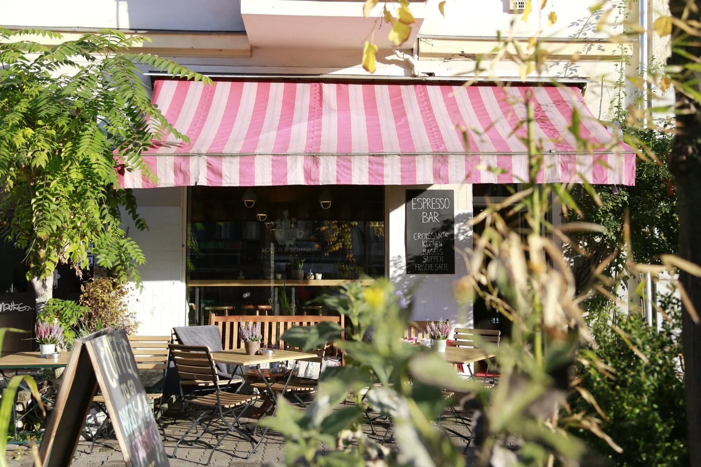
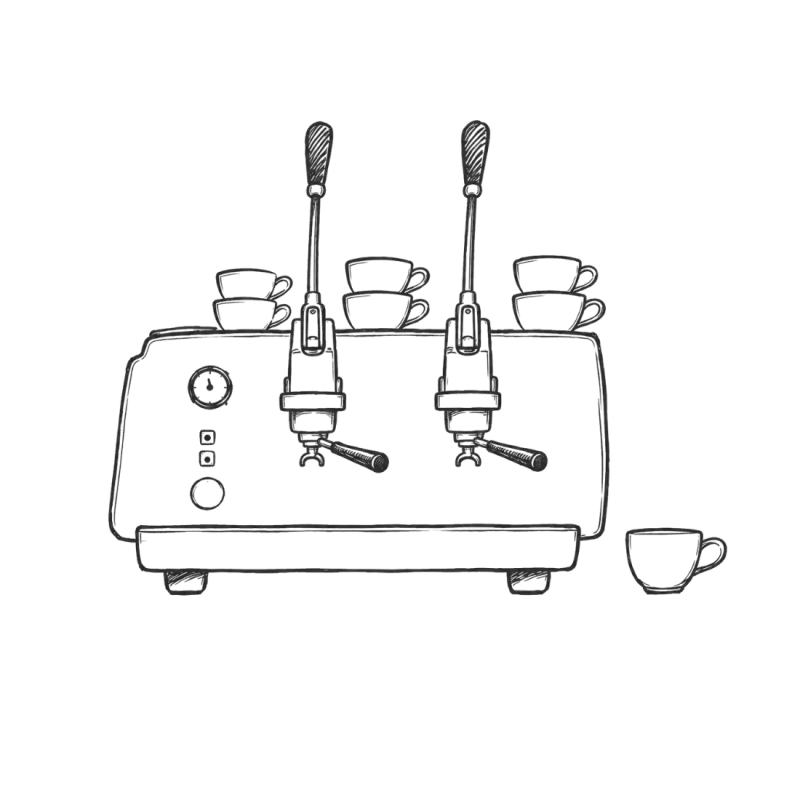
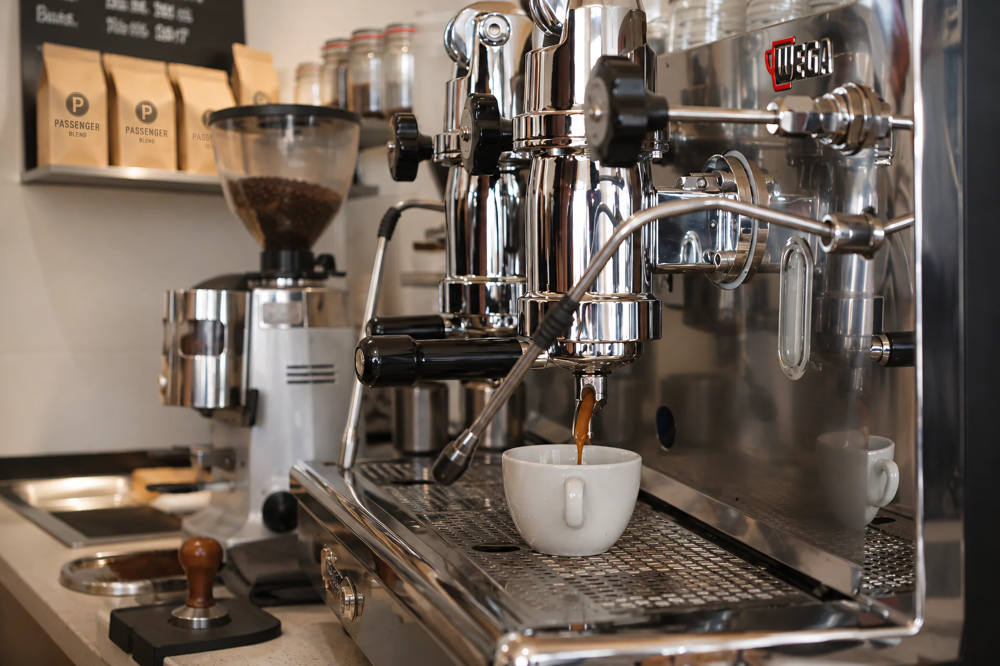
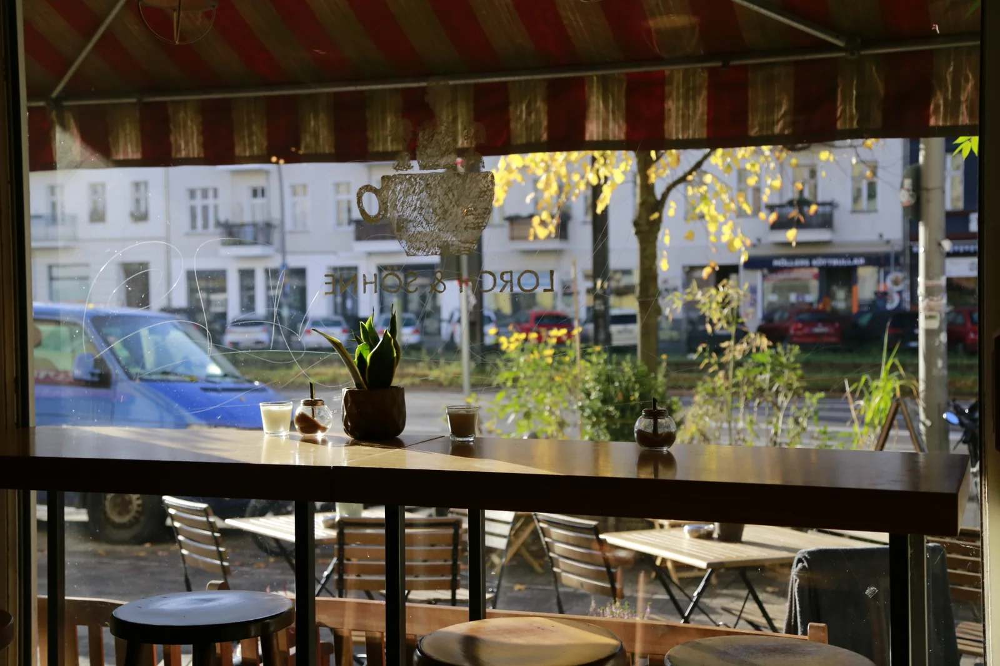
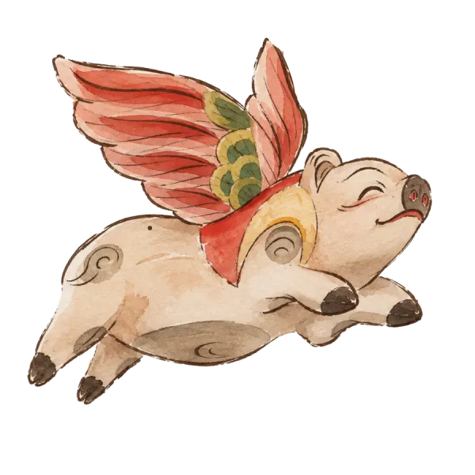
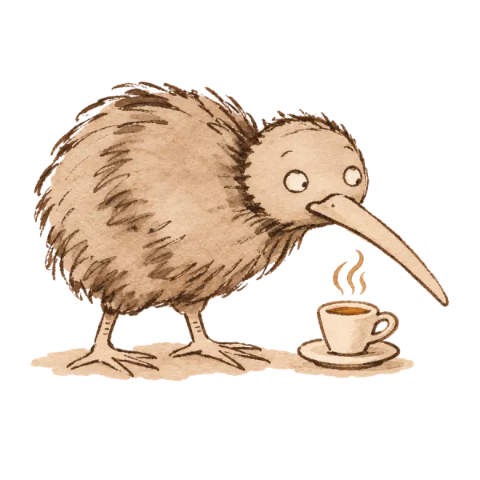

Bagels
Ob Lachs, Serrano, Italiano oder vegetarisch mit Avocado und Hummus – dein Bagel kommt von Salomon Bagels aus Berlin und wird frisch für dich getoastet und belegt.


Erst mal einen Kaffee.
In deine Tasse kommt bei uns der Passenger Blend aus Berlin.
| Kaffeespezialität | Einfach | Doppelt |
|---|---|---|
| Americano | 2,90 € | 3,90 € |
| Espresso | 2,40 € | 3,40 € |
| Espresso Macchiato | 3,10 € | 4,10 € |
| Latte Macchiato | 4,10 € | 5,10 € |
| Milchkaffee | 4,10 € | 5,10 € |
| Cappuccino | 3,70 € | 5,10 € |
| Flat White | — | 4,70 € |
| Cortado | 3,30 € | — |
Außerdem auf der Karte, unter anderem: Matcha Latte, Chai Latte, Golden Milk, heiße Schokolade, Tee, Iced Latte und vieles mehr.
Ob Lachs, Serrano, Italiano oder vegetarisch mit Avocado und Hummus – dein Bagel kommt von Salomon Bagels aus Berlin und wird frisch für dich getoastet und belegt.

Banana Bread, Carrot Cake oder Käsekuchen? In unserer Vitrine findest du selbst gebackenen Kuchen und immer wieder etwas Neues – zum Beispiel Pflaumen-Crumble.
Lust auf etwas Warmes? Dann gibt’s frisch gekochte Suppen – mal Daal, mal Kartoffel- oder Hühnersuppe.
Und außerdem? Zum Frühstück gibt’s zum Beispiel unsere Frühstücksklassiker Kleiner oder Großer Lorch, Eier im Glas und vieles mehr. Für zwischendurch Croissants, Cookies oder Franzbrötchen – dazu frisch gepresste Säfte und vegane Bio-Paletas aus Berlin.
Einen Überblick über das Angebot in der Danziger Straße gibt es hier
Unser Kaffee
In deiner Tasse steckt der Passenger Blend der Berliner Rösterei PASSENGER: 100 % Arabica aus Brasilien, Indien, Indonesien, Guatemala und Äthiopien. Frisch geröstet, kräftig und aromatisch.
Dazu kommen Noten von dunkler Schokolade und Mandel, eine angenehme Süße und wenig Säure.
Schon gewusst?
Mit frisch gemahlenen Bohnen von Passenger Coffee und einer professionellen Espressomaschine bereiten unsere Baristas die Kaffeespezialitäten direkt vor Ort zu.
Für Events und Messen in Berlin kannst du unser Kaffeefahrrad buchen.
Kaffeefahrrad anfragen

Seit 2015
Nachdem Christoph 2014 sein Studium dann doch endlich beendet hatte – er nennt sich bis heute gern Langzeitstudent –, war klar: Ein Bürojob sollte es nicht werden. Also lieber etwas Eigenes machen.
Der passende Laden fand sich über Ebay Kleinanzeigen – auf der Danziger Straße, schräg gegenüber der Grundschule, auf die damals die beiden Söhne gingen. 2015 eröffnete dort das erste Lorch & Söhne. Den Namen hat Björn erfunden, ein Freund. Er erwähnt das bis heute gern ; )
Seit Januar 2024 gibt es Lorch & Söhne auch in der Kommode am Bebelplatz, mitten in der Humboldt-Universität. Zwei ganz unterschiedliche Orte, an denen es vor allem um eines geht: guten Kaffee.
Wir freuen uns auf dich.
Tram M10, Haltestelle Husemannstraße. Alternativ U2 bis Eberswalder Straße, von dort ein kurzer Spaziergang.
Route planenU5 oder U6 bis Unter den Linden. Von dort zu Fuß zum Bebelplatz und zur Alten Bibliothek.
Route planen
Findest du mich im Café?